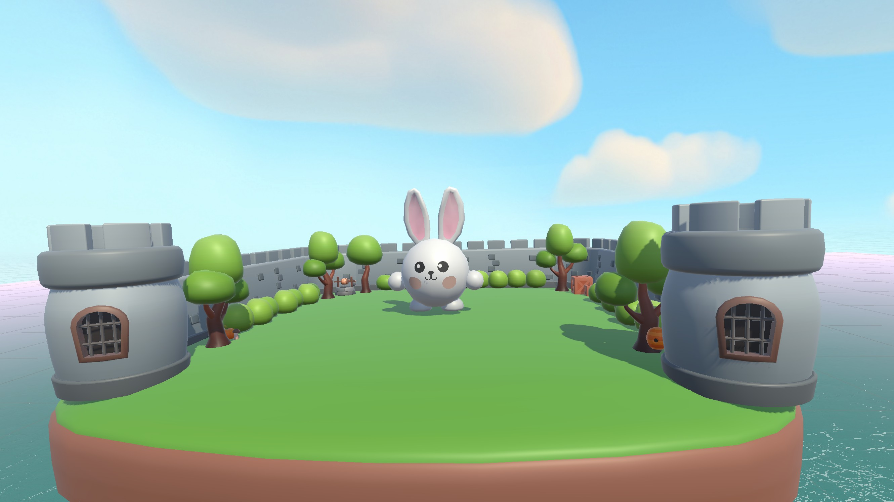
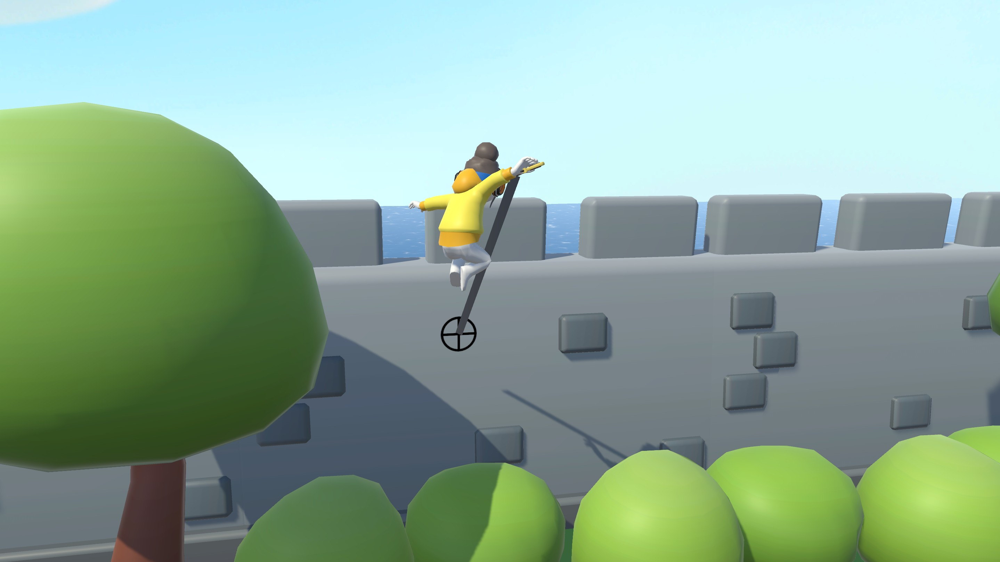

Replay Platformer
-Een geporte platformer met eindbaas-

Door dit spel naar meerdere platformen te porten heb ik veel geleerd over hoe belangrijk het is om systemen flexibel op te zetten. Ik heb de besturing opnieuw gebouwd met het input-systeem van Unity, waardoor de controls eenvoudiger werken op verschillende apparaten.
Ik heb ook een eindbaas met drie fases gemaakt: eerst gooit hij stenen, daarna krijgt hij een schild dat je moet breken met wortels die hij laat spawnen, en in de laatste fase roept hij minions op.
Daarnaast heb ik een grappling-mechaniek gebouwd waarmee spelers grotere sprongen kunnen maken.
Ik heb ook een eindbaas met drie fases gemaakt: eerst gooit hij stenen, daarna krijgt hij een schild dat je moet breken met wortels die hij laat spawnen, en in de laatste fase roept hij minions op.
Daarnaast heb ik een grappling-mechaniek gebouwd waarmee spelers grotere sprongen kunnen maken.
Details
Uitgekomen: Oktober 2025
Engine: Unity
Taal: C#
Teamgrootte: 1
Rol: Gameplay Developer
Tijd: 6 weken
Mijn bijdrage
Level Inrichting & Gameplay
- Inrichting van het platformer-level en plaatsing van gameplay-elementen.
Grappling Mechanic
- Mechaniek waarmee spelers zich kunnen vastgrijpen en grote sprongen kunnen maken.
Enemy AI & Combat
- Vijanden met AI die naar de speler toe lopen en aanvallen wanneer je in de buurt komt.
- Spelers kunnen vijanden verslaan door op ze te springen, waarna ze exploderen.
Boss Fight
- Ontwerp en implementatie van de eindbaas van het spel.
Pause System
- Pauzescherm dat het spel volledig stilzet wanneer de speler pauzeert.
private void StartGrapple()
{
//check if you can grapple
if (_grappleCooldownTimer > 0f) return;
_isGrappling = true;
//freeze the player so it doesn't cause any problems while grappling
_characterMovement.currentState = CharacterMovement.PlayerState.Freeze;
//draw a raycast to where you want to grapple
RaycastHit hit;
if (Physics.Raycast(_camera.position, _camera.forward, out hit, _maxGrappleDistance, _whatIsGrabbable))
{
_grapplePoint = hit.point;
//dont allow to grapple the rock or boss
if (hit.collider.CompareTag("rock"))
{
Invoke(nameof(StopGrapple), _grappleDelay);
}
else if (hit.collider.name == "Boss")
{
if (!_didBossDamage)
{
float damage = BossScript.CurrentHealth > 30f ? 5f : 1f;
BossScript.CurrentHealth -= damage;
_didBossDamage = true;
BossExplode.Play();
}
Invoke(nameof(StopGrapple), _grappleDelay);
}
//destroy the boss carrot if you hit it
else if (hit.collider.CompareTag("carrot"))
{
HandleCarrot(hit);
Invoke(nameof(StopGrapple), _grappleDelay);
}
//if you hit an object you can actually grapple, then grapple movement = true
else
{
_grappleMovement = true;
_grappleCooldownTimer = 1f;
}
}
else
{
//if you didn't hit anything / the raycast was too short to hit anything
//draw a line
_grapplePoint = _camera.position + _camera.forward * _maxGrappleDistance;
//stop grappling
Invoke(nameof(StopGrapple), _grappleDelay);
}
_lineRenderer.enabled = true;
_lineRenderer.SetPosition(1, _grapplePoint);
}
private void ExecuteGrapple()
{
//stop the body from moving
_characterMovement.Rigidbody.isKinematic = true;
//move the character to the grapple point
_characterMovement.transform.position = Vector3.Lerp(
_characterMovement.transform.position,
_grapplePoint,
Time.deltaTime * 2f
);
//if you are close enough to the grapple point stop grappling
//cause the closer you get, the slower the grapple
if (Vector3.Distance(_characterMovement.transform.position, _grapplePoint) < 0.7f)
{
StopGrapple();
}
}


